1893
Založení klubu
Josef a Karel Cífkovi a Josef Rössler-Ořovský zakládají I. Český Lawn-Tennis Klub. První dvorce byly podle cs Wikipedie na Židovském ostrově, od 1894 na Střeleckém ostrově.
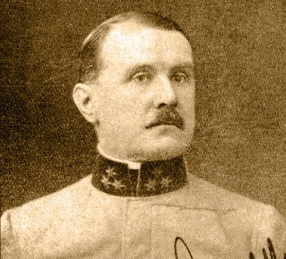
Ostrov Štvanice 38, Praha 7 Venkovní dvorce denně 7:00–22:00 Jediný český člen Centenary Tennis Clubs
IExpozice · Ostrov v čase
Od roku 1893
Nejstarší tenisový klub v Praze. Projděte ostrov Štvanice a sto třicet let klubu jako výstavu – se štítky a prameny. Na konci si zarezervujete kurt.
Dnes 19 kurtů13 antukových12 krytých v zimě
Posuňte letopočet pod mapou – ostrov se promění od štvanic po lávku HolKa.
IIKlub dnes
„Členství v klubu je nabízeno široké veřejnosti … může tedy úplně každý.“ Pramen · cltk.cz – O klubu
19
V létě 13 venkovních antukových kurtů (3 s osvětlením), 3 kurty s tvrdým povrchem, 2 kurty v pevné hale a velký centrální dvorec. V zimě 12 krytých kurtů.
právě teď Haly se staví: pevná hala P1, P2 hraje od 28. 9. 2026, přetlakové haly od 5. 10. 2026.
od9 500 Kč
Členem se může stát úplně každý. Stačí uhradit roční členský poplatek – v ceně jsou venkovní dvorce, bazén, fitness, regenerace, Revue i hra zdarma v klubech Centenary Tennis Clubs.
Pramen · cltk.cz – Podmínky členství · haly v zimě se platí zvlášť
3–9
Kolem stovky dětí, nábory na jaře a na podzim. Cena zahrnuje trenéra i pronájem kurtu, za nepříznivého počasí se hraje v hale. Vede ji Mgr. Jan Pecha, Ph.D.

„V nejstarším klubu v Praze. … Je rodinný. Opravdu se tam cítím jako v rodině.“
IIIKronika
Klub nesl během svých dějin několik jmen. Razítko ukazuje, pod kterým právě listujete. Z 38 záznamů kroniky vybíráme osm; každý má štítek pramene a míru jistoty.
1893
Josef a Karel Cífkovi a Josef Rössler-Ořovský zakládají I. Český Lawn-Tennis Klub. První dvorce byly podle cs Wikipedie na Židovském ostrově, od 1894 na Střeleckém ostrově.

1912
Turnaj na Štvanici přímo pod oblouky Negrelliho viaduktu. Ladislav Žemla je čtvrtý ve dvouhře na OH ve Stockholmu.
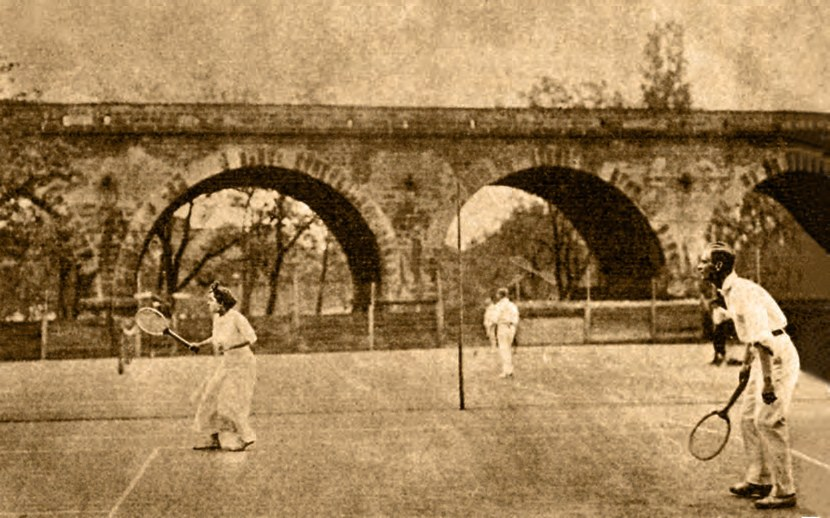
1954
Ve finále porazil Kena Rosewalla 13-11, 4-6, 6-2, 9-7 – jako občan Egypta a jako jediný muž v brýlích v historii Wimbledonu.
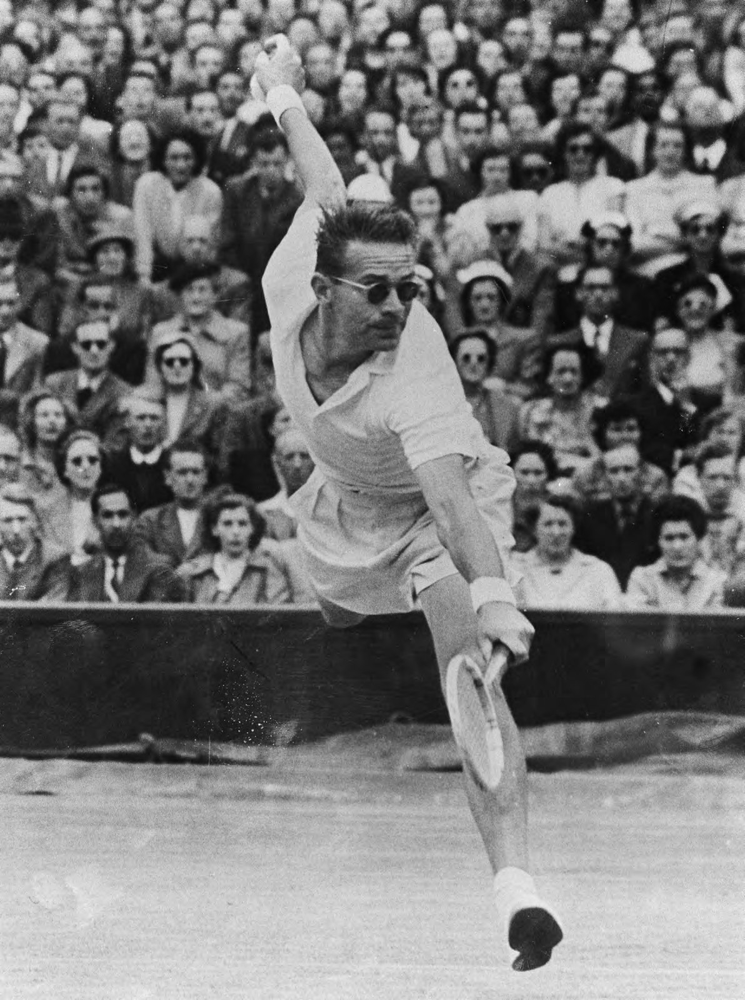
19661963–1966
Spartak Praha Motorlet s mladým Janem Kodešem vyhrává ligu smíšených družstev (1966 doloženo, 1963–1965 pravděpodobně). Pod jménem Motorlet klub podle svých pramenů získal 12 titulů.
Podle klubu 16 titulů mistra republiky ve smíšených družstvech: 12× jako Spartak Praha Motorlet, dále 1975, 1990, 2018 a 2019.
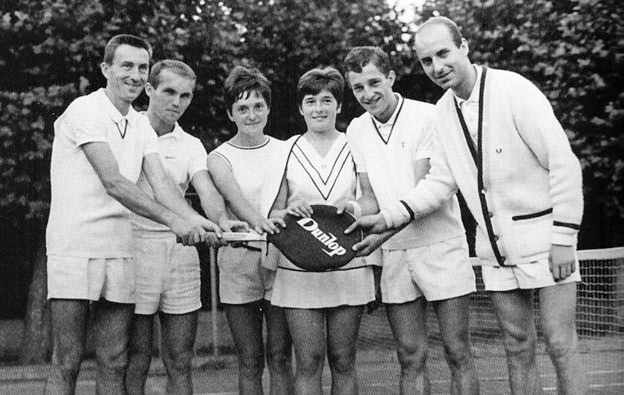
19711971–1972
ČSSR – Španělsko 3:2 (16.–18. 7. 1971): Kodeš porazil Orantese i Gisberta, Pála Gisberta 6:0, 6:1, 6:1. V květnu 1972 Kodeš na Štvanici porazil mladého Björna Borga 6:2, 6:3, 7:5.
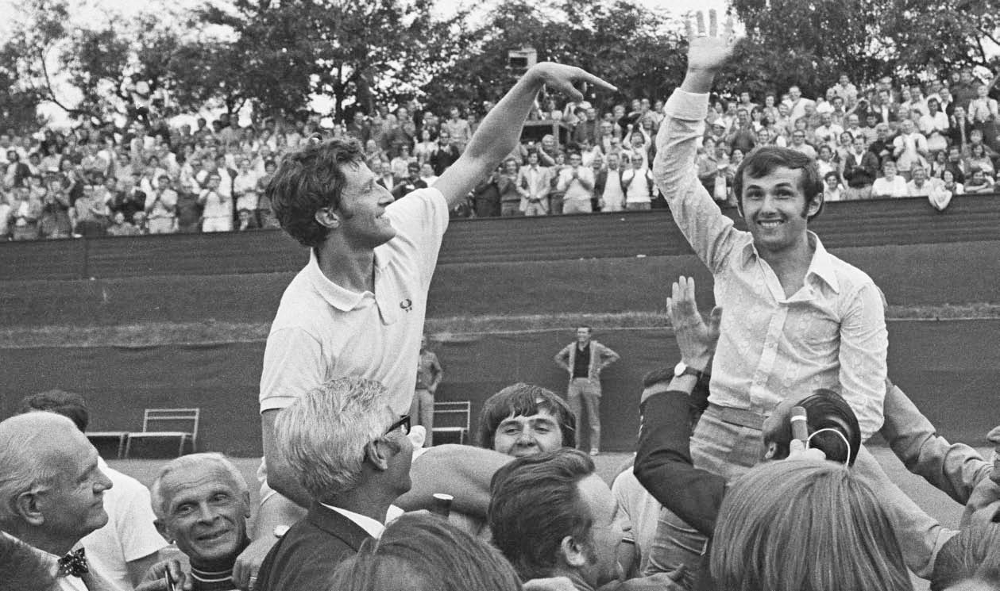
1986
16. 6. 1986 se otevírá nejmodernější tenisový areál tehdejšího Československa (arch. Kales a Novotná). Premiérou je Pohár federace (20.–27. 7.): Martina Navrátilová se poprvé po emigraci vrací a ve finále porazí Mandlíkovou 7:5, 6:1.
Centrální dvorec patří Českému tenisovému svazu, ostatní kurty klubu.
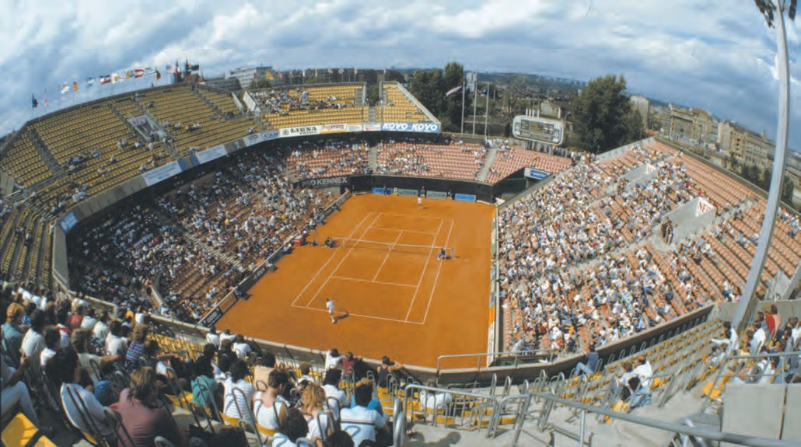
2018
10. 6. 2018 slaví klub 125 let. V prosinci vyhrává extraligu – finále v Říčanech s Prostějovem 5:4.
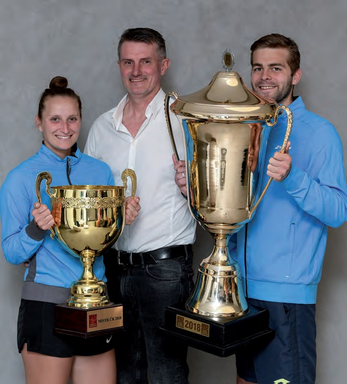
2026
Muchová vyhrává WTA 1000 v Dauhá a WTA 500 v Bad Homburgu, 11. 7. hraje finále Wimbledonu a v srpnu vyhrává s Jakubem Menšíkem mix na US Open. Nový stadion stojí 40 let; podle newsletteru 3/2026 se na Štvanici otevírá Síň slávy českého tenisu.

IVTehdy a teď
Dva letecké pohledy se stadionem a viaduktem. Táhněte dělicí čárou nebo použijte šipky na klávesnici.
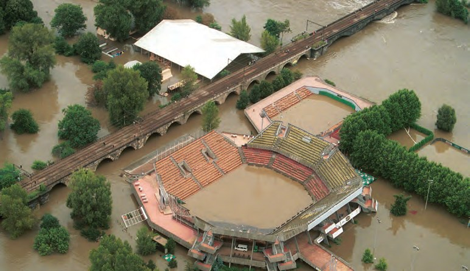
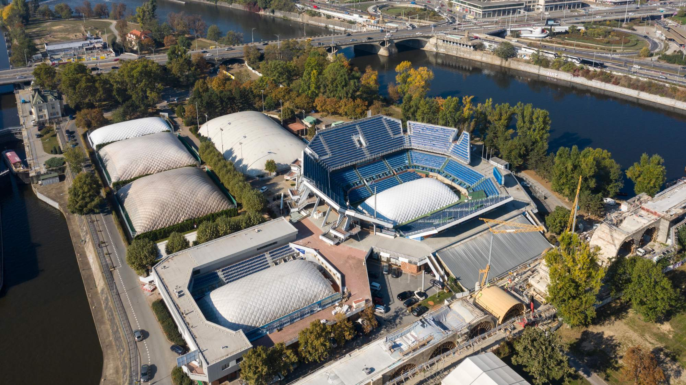
Povodeň
Pramen · ČTK 14. 6. 2006 · Revue 01/2023, s. 46
Areál v zimní podobě
Pramen · fotografie ze stávajícího webu klubu
VHráli na Štvanici
Galerie legend z klubových publikací – podle Bulletinu 2023 víc než šedesát jmen. Podtržená jména mají doloženou příležitost: klepněte a uvidíte kdy.
René Lacoste Henri Cochet Donald Budge Rod Laver Neale Fraser József Asbóth Ivan Lendl Gustavo Kuerten Hana Mandlíková Jana Novotná Chris Evertová-Lloydová Věra Pužejová Stan Smith Petr Korda Mats Wilander Marcel Bernard Frank Parker Budge Patty Yvon Petra Jean Borotra Jack Crawford Fred Stolle Lewis Hoad Jaroslav Drobný Fred Perry Goran Ivaniševič Artur Larsen Steffi Grafová Manuel Santana Pat Cash Manuel Orantes Andrés Gimeno Richard Krajicek Marcelo Ríos Viktoria Azarenková Marion Bartoliová Samantha Stosurová Gabriela Sabatiniová Petra Kvitová Francesca Schiavoneová Mary Pierceová Miloslav Mečíř A. Sánchezová-Vicariová Gottfried von Cramm Guillermo Vilas Martina Hingisová Marat Safin Nicola Pietrangeli
doložená příležitosthráli za klubostatní podle klubu – galerie „Legendy na Štvanici“
Členy klubu nebyli: Martina Navrátilová, Ivan Lendl, Helena Suková, Hana Mandlíková, Petr Korda a Menzel – členství v I. ČLTK prameny neuvádějí. Pramen · Revue 02/2013, s. 17–18 · Revue 01/2023, s. 66–67
VISíň slávy
Jen osobnosti s doloženou vazbou na klub. Podle registru ČTS získali hráči v barvách klubu v den triumfu 10 grandslamových titulů; tituly Drobného a Kodeše patří do štvanické historie.
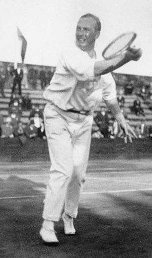
Legenda klubu
1887–1955
Bronz OH Antverpy 1920 – mix se Skrbkovou; první mistr ČSR ve dvouhře 1920.
Pramen · en.wikipedia – Ladislav Žemla
ověřeno
Čestný člen
1921–2001
Wimbledon 1954 – finále s Rosewallem 13-11, 4-6, 6-2, 9-7. Mistr světa v ledním hokeji 1947.
Pramen · tennisfame.com · en.wikipedia · ve štvanické historii
ověřeno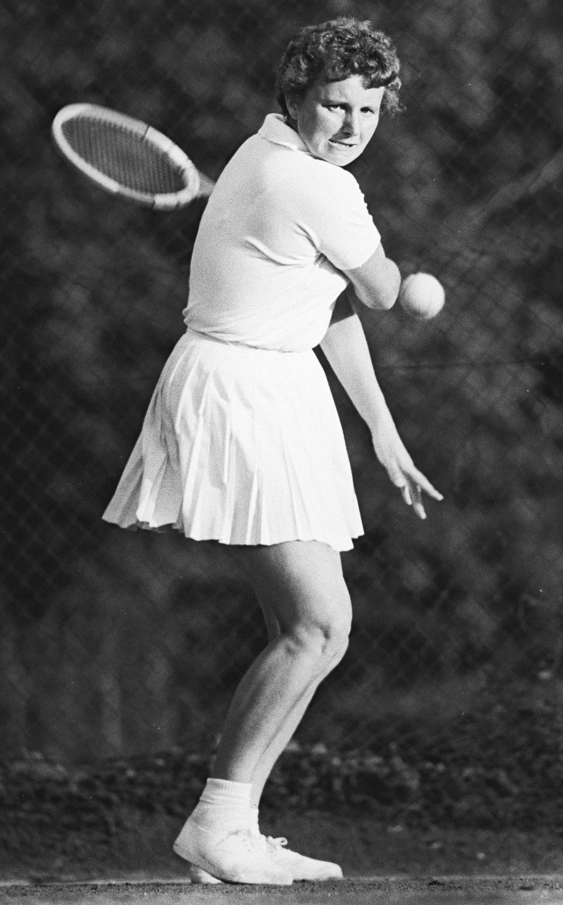
Legenda klubu
1931–1982
Finále Wimbledonu 1962 – první čs. finalistka. Roland Garros 1957 – mix s Javorským.
Pramen · en.wikipedia – Věra Suková
ověřeno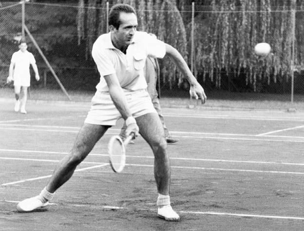
Zasloužilý člen
1935–2019
Trenér daviscupového týmu ČSSR 1970–1981 (Davis Cup 1980) a trenér Jana Kodeše.
Pramen · iROZHLAS/ČTK 5. 5. 2019
vazba podle klubu
Čestný člen
nar. 1946
Wimbledon 1973 – finále s Metrevelim 6-1, 9-8 (7-5), 6-3. Prezident klubu 1987–1990.
Pramen · tennisfame.com · ve štvanické historii
ověřeno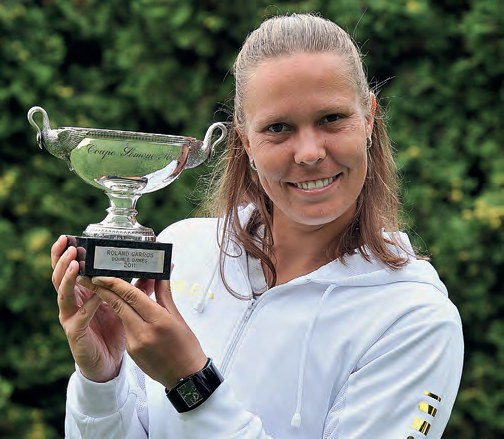
Zasloužilá členka
za I. ČLTK 2003–2023
Roland Garros 2011 a US Open 2013 – čtyřhra s Hlaváčkovou; stříbro OH 2012.
Pramen · registr ČTS · en.wikipedia
ověřenoČestná členka
za I. ČLTK od 2011
Wimbledon 2023 – první nenasazená šampionka v historii (finále s Jabeurovou 6:4, 6:4).
Pramen · registr ČTS · en.wikipedia · newsletter 130 let
ověřenoHráčka klubu
za I. ČLTK od 2019
US Open 2026 – mix s Menšíkem 6:3, 1:6, [10:6]; finále Wimbledonu 2026.
Pramen · registr ČTS · usopen.org · wtatennis.com
ověřenoVIIKiosek · I.ČLTK Revue
41 čísel klubového časopisu od roku 2006, dvakrát ročně. „I.ČLTK REVUE je tu s námi už dvacet let.“ Hledejte v titulcích a obsazích, nebo sledujte příběh v obálkách.
Právě vyšlo · 01/2026 · 44 stran
Čísla 01/2016 a 02/2016 v archivu PDF chybí · obálka 02/2013 připomíná Drobného 1954
VIIIVitrína
Muzejní karty ve formátu název · rok · technika · pramen. Klepnutím předmět otevřete, dalším klepnutím přiblížíte detail.
Inv. 2023/1
Zlatý odznak s klubovým logem pro zasloužilé členy – totožný s odznaky předávanými poprvé při 100. výročí – a stříbrná pamětní mince se znakem I. ČLTK ke 130. výročí.
„Zlato za věrnost, práci a úspěchy“
Inv. 2023/2
Antukový centrkurt se stoličkou rozhodčího, nad tribunou nápis se znakem klubu a štíhlé stromy. Podle Revue jde o „vylepšený originál“ obrazu, který zval už k jubileu před deseti lety; každý člen dostal k oslavám plakát.
Inv. 1902
„Půvabná fotografie s ještě půvabnějším textem na korespondenčním lístku odeslaném z Prahy 16. července 1902.“
Inv. 19. st.
Doklad zábav na ostrově v 19. století: amfiteátr, restaurace s tanečními sály, plovárna a dobové atrakce („33 divých žen, Amazonek krále Dahomejského“).
Inv. 2006
Na obálce Jan Hernych s trofejí za vítězství v ECM Prague Open 2005. Uvnitř: „»Herňa« na Štvanici neprohrává“, interview s Františkem Stejskalem a „Školička je plná talentů!“.
IXZ ostrova
· družstva
Třetí místo z Mistrovství ČR smíšených družstev starších žáků v Ostravě veze tým I.ČLTK Praha. V souboji o bronz porazil tým Modřan.
· výsledky
Denisa Žoldáková se probojovala do finále turnaje ITF žen W75 v Polsku. Ve finále podlehla ve třech setech Barboře Palicové.
· výsledky
Muchová s Menšíkem ovládli US Open. Česká dvojice získala senzační grandslamový titul, když ve finále porazila švýcarsko-italský pár Bencic, Cobolli.
· turnaje v klubu
V termínu 16.–22. srpna 2026 probíhá v I.ČLTK Praha mezinárodní turnaj mužů ATP Challenger 75 a žen ITF W50. pragueopen.net